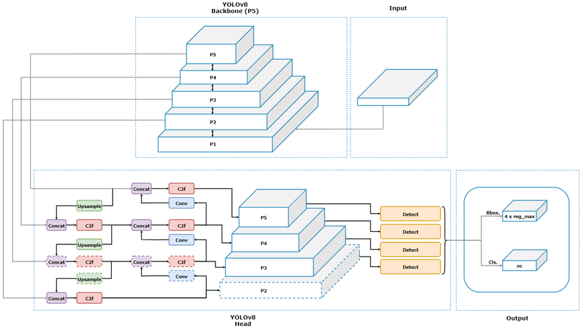
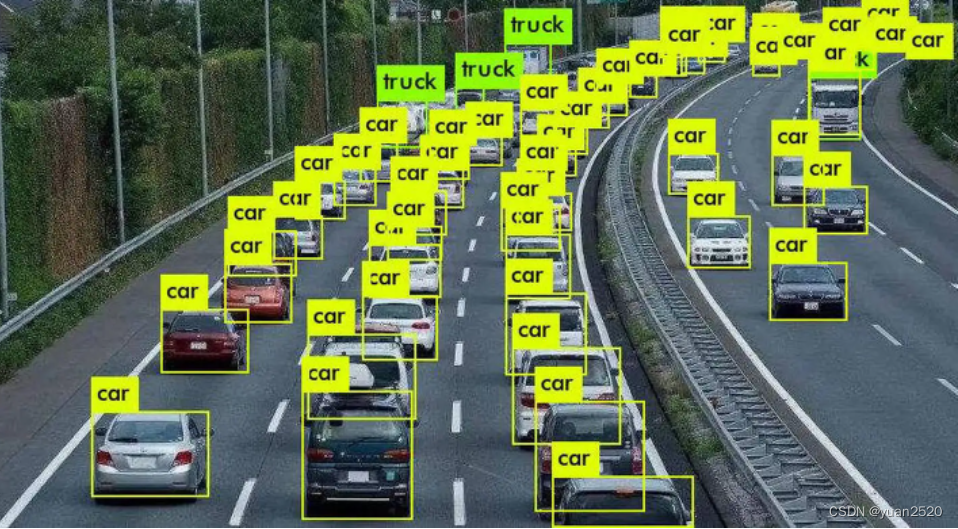
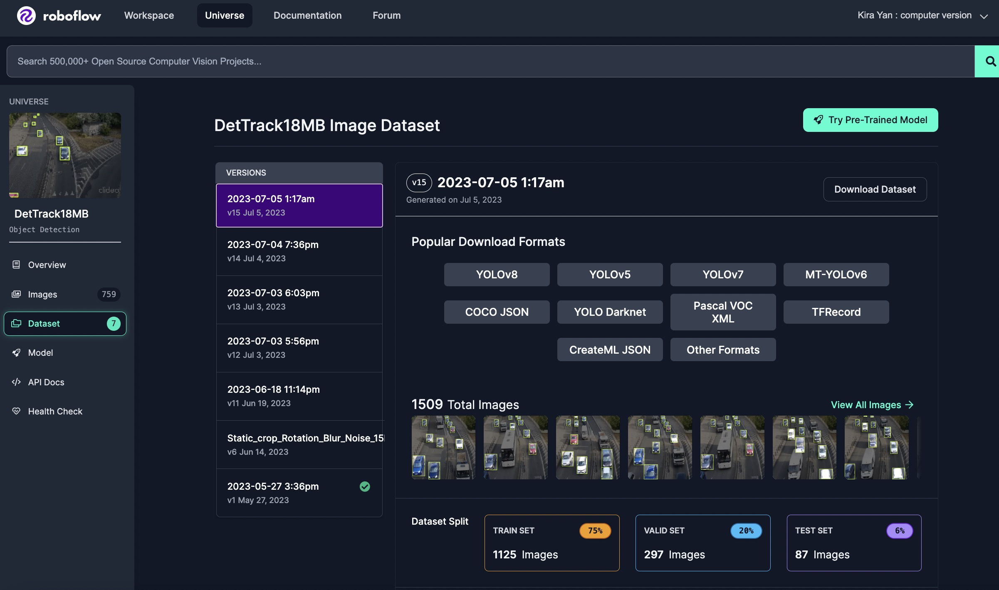

<!DOCTYPE html>
<html lang="en">
<!DOCTYPE html>
<html lang="en">
<head>
    <meta charset="utf-8" />
    <meta name="viewport" content="width=device-width, initial-scale=1, shrink-to-fit=no" />
    <meta name="description" content="" />
    <meta name="author" content="" />
    <title>REAL TIME CAR SPEED DETECTION</title>
    <link rel="icon" type="image/x-icon" href="../dist/assets/favicon.ico" />
    <!-- Font Awesome icons (free version)-->
    <script src="https://use.fontawesome.com/releases/v6.3.0/js/all.js" crossorigin="anonymous"></script>
    <!-- Google fonts-->
    <link href="https://fonts.googleapis.com/css?family=Varela+Round" rel="stylesheet" />
    <link href="https://fonts.googleapis.com/css?family=Nunito:200,200i,300,300i,400,400i,600,600i,700,700i,800,800i,900,900i" rel="stylesheet" />
    <!-- Core theme CSS (includes Bootstrap)-->
    <link href="../static/css/styles.css" rel="stylesheet" />
</head>
<body>

</body>
</html>


    <body id="page-top">
        <!-- Navigation-->
        <nav class="navbar navbar-expand-lg navbar-light fixed-top" id="mainNav">
            <div class="container px-4 px-lg-5">
                <a class="navbar-brand" href="#page-top">Information</a>
                <button class="navbar-toggler navbar-toggler-right" type="button" data-bs-toggle="collapse" data-bs-target="#navbarResponsive" aria-controls="navbarResponsive" aria-expanded="false" aria-label="Toggle navigation">
                    Menu
                    <i class="fas fa-bars"></i>
                </button>
                <div class="collapse navbar-collapse" id="navbarResponsive">
                    <ul class="navbar-nav ms-auto">
                        <li class="nav-item"><a class="nav-link" href="#projects">Projects</a></li>
                        <li class="nav-item"><a class="nav-link" href="#members">Contact</a></li>
                    </ul>
                </div>
            </div>
        </nav>
        <!-- Masthead-->
<header class="masthead" style="background-image: url('../static/background1.jpeg'); background-size: cover; background-position: center;">

    <div class="container px-4 px-lg-5 d-flex h-100 align-items-center justify-content-center">
        <div class="d-flex justify-content-center">
            <div class="text-center">
                <h1 class="mx-auto my-0 text-uppercase">REAL TIME TRAFFIC SPEED DETECTION</h1>
                <b></b>

                <h2 class="text-white-50 mx-auto mt-2 mb-5">Measure traffic speeds on specific road sections to help manage traffic flow</h2>
                <div class="my-4"></div>
                <h3 style="color: gray;">Welcome to the vehicle speed monitoring system. This system provides real-time vehicle speed data and historical analysis.</h3>

            </div>
        </div>
    </div>
</header>

        </header>

        <!-- YOLOV8-->
        <section class="projects-section bg-light" id="projects">
                <div class="row gx-0 mb-5 mb-lg-0 justify-content-center">
                    <div class="col-lg-6"></div>
                    <div class="col-lg-6">
                        <div class="bg-black text-center h-100 project">
                            <div class="d-flex h-100">
                                <div class="project-text w-100 my-auto text-center text-lg-left">
                                    <h4 class="text-white">YOLOv8 Model</h4>
                                    <p class="mb-0 text-white-50">YOLOv8 is an advanced deep learning model designed for real-time object detection tasks.</p>
                                </div>
                            </div>
                        </div>
                    </div>


                <!-- Experiemnt-->
<div class="row gx-0 mb-5 mb-lg-0 justify-content-center">
    <div class="col-lg-6">
        <div class="bg-black text-center h-100 project">
            <div class="d-flex h-100">
                <div class="project-text w-100 my-auto text-center text-lg-right">
                    <h4 class="text-white">Experiment</h4>
                    <p class="mb-0 text-white-50">In the field of vehicle speed detection, the YOLOv8 model can identify and track vehicles on the road and calculate their movement speed in real time. Utilizing high-resolution camera input, YOLOv8 can accurately analyze vehicle position changes from video frames and estimate vehicle speed through changes in time and distance.</p>
                </div>
            </div>
        </div>
    </div>
    <div class="col-lg-6"></div>
</div>

                <!-- Project Two Row-->
<div class="row gx-0 justify-content-center">
    <div class="col-lg-6 order-lg-1"></div>
    <div class="col-lg-6 order-lg-2">
        <div class="bg-black text-center h-100 project">
            <div class="d-flex h-100">
                <div class="project-text w-100 my-auto text-center text-lg-right">
                    <h4 class="text-white">Datasets</h4>
                    <p class="mb-0 text-white-50">We use the public data set from <a href="https://universe.roboflow.com/thesis-s9ojf/dettrack18mb" target="_blank" class="text-white">roboflow</a>, which has 1509 vehicle images and each image has a corresponding label. In the experiment, our data set is divided into a test set, a verification set and a training set.</p>
                </div>
            </div>
        </div>
    </div>
</div>


                    <!-- Members Section -->
<!-- Members Section -->
<section class="members-section bg-black" id="members">
    <div class="container px-4 px-lg-5">
        <div class="row gx-4 gx-lg-5">
            <div class="col-md-10 col-lg-8 mx-auto text-center" style="margin-top: 50px;"> <!-- Increased top margin -->
                <h2 class="text-white mb-5">Meet Our Team!</h2>
                <div class="my-4"></div> <!-- Blank space for separation -->
                <!-- Rest of the content -->
            </div>
        </div>
    </div>
</section>


                    <!-- Member 1 -->
                    <div class="col-md-4 mb-3">
                        <div class="card py-4 h-100">
                            <div class="card-body text-center">
                                <h4 class="text-primary">Li Yan</h4>
                                <p class="text-black-50">Student</p>
                                <p class="text-black-50">li studied computer science at uts
Science major, she has knowledge background in machine learning and deep learning, and she is interested in computer version research direction.</p>
                                <a href="mailto:jane.doe@example.com">Li.yan-7@student.uts.edu.au</a>
                            </div>
                        </div>
                    </div>
                    <!-- Member 2 -->
                    <div class="col-md-4 mb-3">
                        <div class="card py-4 h-100">
                            <div class="card-body text-center">
                                <h4 class="text-primary">Chiyuan Ma</h4>
                                <p class="text-black-50">Student</p>
                                <p class="text-black-50"> UTS higher degree research student, casual adademic. His research interests are in the areas of computer vision and multimodality..</p>
                                <a href="mailto:john.smith@example.com">Chiyuan.Ma-1@student.uts.edu.au</a>
                            </div>
                        </div>
                    </div>
                    <!-- Member 3 -->
                    <div class="col-md-4 mb-3">
                        <div class="card py-4 h-100">
                            <div class="card-body text-center">
                                <h4 class="text-primary">Huaxia Guo</h4>
                                <p class="text-black-50">Student</p>
                                <p class="text-black-50">Master of Data Science, 2009-2013, Mechanical Design and Manufacturing Major of Chongqing University, 13-18SEC Mechanical Design Engineer, 18-20 Years Financial Data Analyst at Yinfeng Xinrong Software Company, 20-23 Years, Regional Director of Yinfeng East China Region</p>
                                <a href="mailto:emily.white@example.com">huaxia.guo@student.uts.edu.au</a>
                            </div>
                        </div>
                    </div>
                </div>
            </div>
        </div>
    </div>
</section>
<!-- End of Members Section -->

    </body>
</html>
